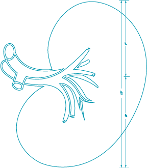

Welcome
Contents
 Contents
1 Market trends:
1 Market trends:
the need for novel immunosuppressive agents
2 Signaling the future: a look at the belatacept mechanism of action (MOA)
3 Optimizing outcomes: an overview of belatacept clinical studies
4 Clinical implications: understanding the significance of belatacept data